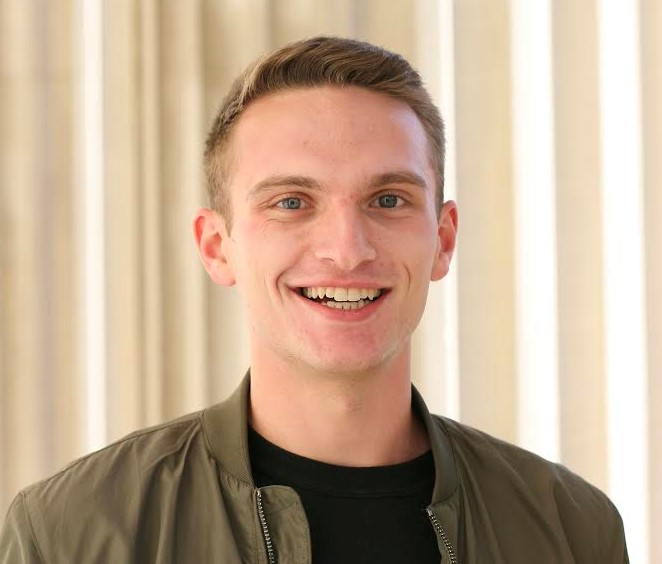

Layne Britton
Senior at Columbia University pursuing a B.A. in Computer Science
Software Engineer and Analyst Intern at Computers Unlimited
Resume
GitHub
Writing Samples
laynebritton1998@gmail.com
/
971-999-1749
/ LinkedIn
Bio
My name is Layne Britton.
I am a
senior
at
Columbia University
pursuing a B.A. in computer science.
I am currently working as a Software Engineer and Analyst Intern at Computers Unlimited, a company based out of Billings, MT.
In addition to tech, I have a lot of interest in the humanities as well.
I have volunteered for political activism groups, taught an intro to computer science class in my hometown in Montana, and am actively
looking for ways to use my education to provide a positive impact in others' lives.
This website serves as a more in-depth look at my experiences and career. For a more brief overview, please check out my
resume.
Work Experience
Computers Unlimited - Software Engineer and Analyst Intern May 2019 - August 2019
- Designed and implemented a project to add usage of a NoSQL database and search engine, Elasticsearch, to a 20+ year old software application. Written in C#, the implementation vastly speed up time to search and reduced hardware requirements.
- Created a RESTful API and load testing environment to allow developers to gather performance metrics after making changes to system calls in the software.
ServiceTarget - Full Stack Developer Intern May 2018 - February 2019
- Worked on a team to design and implement an audit logging system that created and monitored audits after the customer modified metadata. Required work in the entire service pipeline; building logic in the Java API and visualizing the data in the Angular front-end using TypeScript.
- Wrote queries to pull data, stored in Amazon's AWS, and set up tables to store this data. Additionally wrote a data-fixer to parse through old data and modify data fields.
Rocky Mountain College - IT Technician September 2016 - June 2018
- Leader of student technical support. Often researched solutions to technical issues to assist students in repairing software issues with personal computers.
- Assisted the Linux Systems Administrator to use Linux Bash and Windows Powershell to automate Windows computer domain migration.
Projects
- Lit Hum Fighting Video Game - A 2D fighting game I made for my literature class. Features major characters from the course's syllabus. Check it out here.
Presentations
- TRiO Educationl Talent Search - Taught Intro to Computer Science workshop - Created a 3 hour lecture/workshop to introduce students from low-income economic backgrounds to computer science. Began with an intro that included some sequencing puzzles, and then moved to Scratch to create a chase game. The lecture slides were created by me and can be viewed here. The chase game was based off the suggested educator guides provided by MIT. The workshop used those slides in junction with whiteboarding exercises to explore foundational computer science concepts.
- Columbia Splash - Taught Intro to Game Design to a high school group - Created a 2 hour class on the beginnings of video game design and some of its foundational concepts. Link to the slideshow presented during the class
Activities & Other Experience
- Yellowstone Boys & Girls Club - Volunteer, teaching elementary computer science - Used tools such as Scratch, code.org, and Blitz3D to teach foundational concepts of computer science.
- Private Programming Instructor in NYC - Teaching elementary computer science topics in home to small groups. Primarily using the tools Scratch and code.org to gain understandings in topics like sequencing, recursion, and object-oriented progmming.
- Columbia University Democrats - Hype committee and get out the vote volunteer - During the fall 2018 elections, we canvassed in and successfully flipped a congressional district.
- Sunrise Movement - Activist for progressive climate change policy - Helped coordinate visits to the offices of congressional represntatives and senators to advocate for policy.
- Rocky Mountain College Student Government - Vice President, Education Committee Member - Oversaw the all of the student government's committees and ensured they were working to enact their agendas as planned. Voted on funding for other student organizations and activities. Worked on the education committee to get feedback about the first experience course for the college's freshmen class and deliver it to the college's administration.
- eSports Club - President and Founder - Created a club at Rocky Mountain College that focused on creating teams to compete in competitive video games at a collegiate level. I planned and hosted several city-wide tournaments on our campus. Starting from the ground up, our club grew to be one of the largest clubs on campus and our members competed against other schools in many collegiate tournaments.
- Rocky Mountain College Residence Hall Association - President - Planned monthly activities for the student body. I personally created and hosted a Jeopardy night. For Halloween we put on a large-scale showing of The Rocky Horror Picture Show
Education
Columbia University - Columbia College August 2018 - May 2020 (Expected Graduation)
Bachelor of Arts, Computer Science
Rocky Mountain College August 2016 - May 2018 (Transferred)
Bachelor of Science, Computer Science
Montana State University - Billings June 2014 - May 2016
General education
I formally began my college education at Rocky Mountain College in Billings, MT. After working towards degree progress for two years, I transferred to Columbia University to finish my undergrad studies there.
During my sophomore, junior, and senior years of high school I took university courses at Montana State University Billings, alongside high school classes to get a head start on my college education.
Older Work Experience
This section contains older jobs that I have omit from my up-to-date résumé
TRiO Upward Bound - Team Leader May 2017 - Aug 2017
- Worked on a team to coordinate and administer a college-prep summer program for low-income high-school students.
TRiO Upward Bound / Education Talent Search - Office Assistant June 2016 - August 2016
- Worked with a variety of software to work on miscellaneous projects for the program. Software includes: Photoshop, DaVinci Resolve (Video editing software), and Microsoft Excel.
- Helped facilitate summer-time college tours for high-school students in Educational Talent Search.
Albertsons - Produce Clerk January 2015 - August 2016
- Generalist of the produce section at our store. Duties included handling front-end interactions, stocking shelves, and unloading truck shipments
- Trained new hires to the department
McDonald's - Crew Trainer August 2014 - January 2015
- Trained new crew members in most areas of the restaurant
- Frequently used customer service skills
Last updated: 08-08-2019